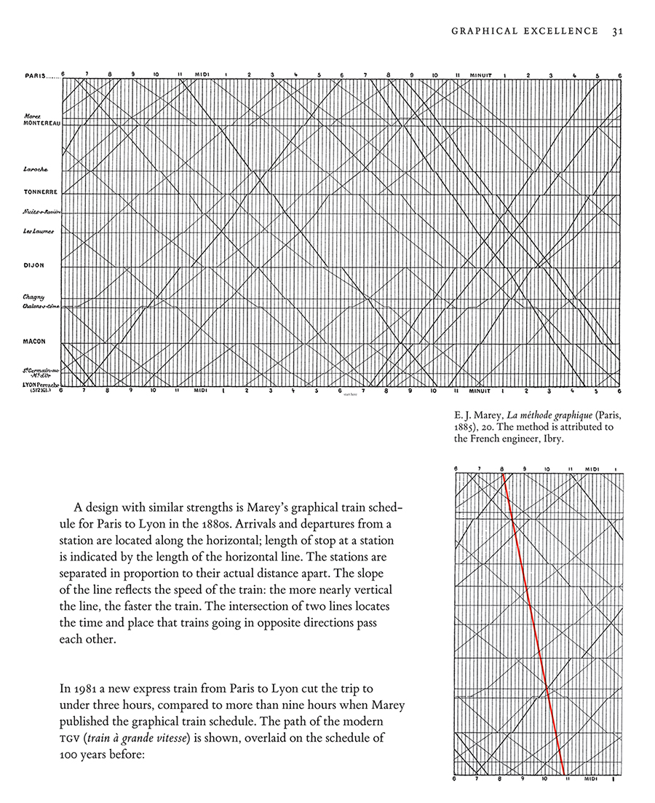
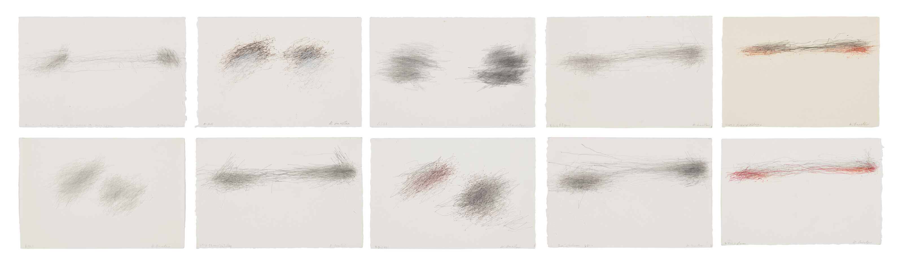
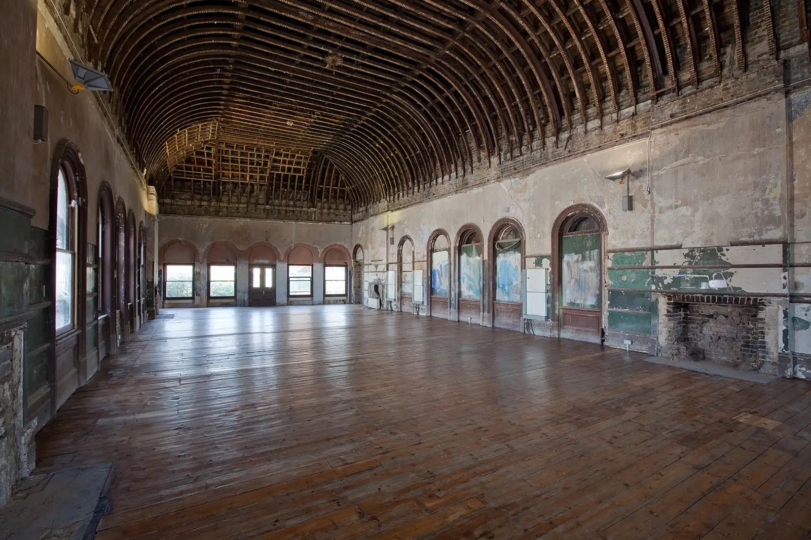

Whistle Stops
Whistle Stops is an autonomous generative artwork that imagines an endless, spectral timetable running through Peckham Rye Station. The diagram is anchored by historically accurate railway stops from the period when the Old Waiting Room was still in use, with Peckham Rye at its centre. Each moving line represents a train, its journey generated by a simulation: trains pursue and avoid one another, cross paths, reverse and become caught in loops, continuously drawing and redrawing an impossible railway timetable.
The work brings together two approaches to recording movement through time.

In Étienne-Jules Marey's La Methode Graphique (1885), train journeys were plotted as lines across diagrams of distance and time, transforming the railway timetable into a visual record of movement.

Almost a century later, William Anastasi’s Subway Drawings surrendered the act of drawing to the railway itself. Travelling on the New York subway - often on his way to play chess with his friend John Cage - Anastasi held pencil to paper while restricting his visual and auditory attention. The jolts, vibrations and turns of the train moved his hand, allowing the journey to make the drawing. Cage described Anastasi's approach simply: "It’s not psychological, it’s physical."
Whistle Stops brings these two processes together through the experience of waiting. A timetable asks us to imagine movement before it happens: to anticipate an arrival, calculate a connection, picture where a train might be now and forecast where it will be next. Waiting becomes a kind of imaginative labour, continually projecting the present into possible futures. Here that act of prediction is made unstable: simulated trains endlessly propose journeys through a railway network drawn from the room's own past, generating fleeting patterns of anticipation, convergence, delay, repetition and return.

Installed in the Old Waiting Room at Peckham Rye, the work becomes a timetable for trains that never quite arrive: always departing, approaching, crossing and returning, while the viewer remains waiting at its centre.